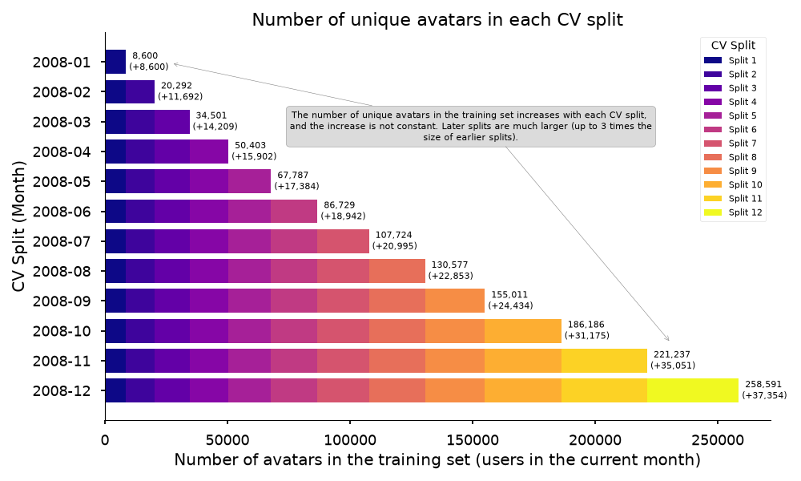

Skrub Data Ops: an application to player churn
Riccardo Cappuzzo, Jérôme Dockès
Inria P16, :probabl.

Skrub
Machine learning on tabular data


- skrub-data.org
- This talk: the skrub DataOps framework.
Textbook ML
\(X \in \mathbb{R}^{n \times p},\ y \in \mathbb{R}^n\)
\(\hat{y} = f_{\hat{\theta}}(X)\)
estimator = TabICLRegressor()
cross_validate(estimator, X, y)
estimator.fit(X_train, y_train)
estimator.predict(X_new)Data-Science Practice

Textbook ML
\(X \in \mathbb{R}^{n \times p},\ y \in \mathbb{R}^n\)
\(\hat{y} = f_{\hat{\theta}}(X)\)
estimator = TabICLRegressor()
cross_validate(estimator, X, y)
estimator.fit(X_train, y_train)
estimator.predict(X_new)Data-Science Practice

Textbook ML
\(X \in \mathbb{R}^{n \times p},\ y \in \mathbb{R}^n\)
\(\hat{y} = f_{\hat{\theta}}(X)\)
estimator = TabICLRegressor()
cross_validate(estimator, X, y)
estimator.fit(X_train, y_train)
estimator.predict(X_new)Data-Science Practice

Data wrangling: filtering, resampling, aggregations, joins, …
- Cross-validate without data leaks.
- Tune choices with validation scores.
- Replay on new inputs.
DataOps
- All the goodies of the scikit-learn framework:
fit()&predict(), cross-validation, hyperparameter tuning, serialization. - Without the usual restrictions & while supporting arbitrary data processing. Multiple inputs, feature & target construction, filtering samples, dynamic arguments for CV splitters & scorers, etc.
- And more: Optuna integration, dynamic previews, pipeline inspection, …
Basic example
Declare the pipeline
Cross-validate
Make a “learner” (object with fit() & predict())

The example: World of Warcraft Avatar History
- Dataset: WoWAH — ~11M timestamped “heartbeats” (one snapshot every ~10 min, 2006–2009, 91k avatars)
- Task: predict whether a player churns (no activity for two months) in month M+1
- Unit of analysis: the (character, month) pair, built as a cross-product grid
- Features: sessionization (
SessionEncoder), monthly aggregates, zone-rarity / Gini location features, lag & diff features - Model:
HistGradientBoostingClassifier+TableVectorizer, month-by-month temporal CV
Model optimization is intentionally not the focus of this talk.
Pain point 1 — Leakage in temporal feature engineering
- Features must only use data available at scoring time
- Session detection and aggregations are stateful w.r.t. time: doing them once on the full table leaks the future
- sklearn
Pipelinecannot do this:X/ymust exist before the pipeline starts, and wrangling lives outside - skrub docs warn explicitly: aggregation can introduce data leakage → wrap it in the DataOps plan
- In the example:
Xandyare cut inside the plan (mark_as_X/mark_as_y), so each CV fold re-runs the feature code on training data only
Pain point 2 — Cross-validation with irregular time splits

Pain point 2 — Cross-validation with irregular time splits
- Off-the-shelf
TimeSeriesSplitassumes folds of equal size - Here the number of (character, month) rows grows every month — folds are unbalanced by nature
Pain point 2 — Cross-validation with irregular time splits
- Write a custom splitter that uses custom dataframe logic to select the samples
- With DataOps plug it in
skb.mark_as_X(cv=Splitter()) - Now, the splitter is honored by
cross_validate,train_test_split, randomized search, and scoring
class Splitter:
def split(self, user_month, has_played=None, interval="1mo"):
time_range = pl.date_range(MIN_DATE, MAX_DATE, interval, eager=True)
for split_point in time_range:
test_month = pl.Series([split_point]).dt.offset_by(interval).first()
train_idx = (
user_month.with_row_index("idx")
.filter(pl.col("month") <= split_point)["idx"]
.to_list()
)
test_idx = (
user_month.with_row_index("idx")
.filter(pl.col("month") == test_month)["idx"]
.to_list()
)
if train_idx and test_idx:
yield train_idx, test_idxPain point 3 — Tuning wrangling choices, not just model knobs
- Model choices are not limited to model hyperparameters:
session_gap(15/30/60 min), include location features?, add Gini?, which lags? - These are data pipeline decisions, with big performance and runtime impact
- With DataOps choices can be dropped inline, where the value is used —
choose_from,choose_bool,choose_float(log=True) - One call to
skb.make_randomized_search(backend="optuna", ...)turns the whole DAG into a search
Pain point 3 — Tuning wrangling choices, not just model knobs
- Replace any value with a choice:
X = data.drop(columns="target", errors="ignore").skb.mark_as_X()
y = data["target"].skb.mark_as_y()
pred = X.skb.apply(StandardScaler()).skb.apply(
- LogisticRegression(C=1.0),
+ LogisticRegression(C=skrub.choose_float(0.1, 10.0, log=True)),
y=y)- Use grid search or randomized search (possibly backed by Optuna).
-learner = pred.skb.make_learner().fit({...})
+learner = pred.skb.make_randomized_search().fit({...})- Tune data pipeline decisions, not only hyperparameters
X_enc = X.skb.apply_func(build_features,
+ additional_features=skrub.choose_bool()
)
pred = X.skb.apply(LogisticRegression())Pain point 4 — One pipeline object, many inputs
- Multi-input pipelines are usually scattered across scripts
- Input methods can differ between model setup and production (read from file, fetch an API…)
- The final DataOp behaves like one sklearn estimator:
.fit(), save, load,skb.eval(env),skb.cross_validate(env) - Production: replay the exact trained DAG on new data, no need for glue code
import skrub
def draft_loader():
return pd.read_csv("path/to/file.csv")
def prod_loader():
return api.fetch().to_pandas()
loader = skrub.var("loader", draft_loader, becomes_default=True)
# build the DAG
learner = data_op.skb.make_learner(fitted=True)
# Use a different loader to get production data
learner.predict({"loader": prod_loader})
# No changes needed by the learner!Pain point 5 — Debugging a complex DAG
- Data Ops work lazily: they need to evaluate all nodes in the DAG to run
- Eager previews: pass a value to
var()and every node shows its result immediately skb.report()emits an HTML report: every node’s name, description, predecessors, fitted estimator, and data preview- On failure, the report shows the offending node and the traceback
Pain point 6 — Big data: subsampling and caching
- 11M rows → interactive development must be fast, but sampling must preserve players’ full trajectories (
sample_by_user, not random rows) - Feature building (
build_feature_table) is very expensive — naive re-runs during search would explode cost - DataOps:
skb.subsample()for development is automatically off for realeval/cross_validateruns - Caching (
skrub.set_config(cache=True)) persists expensive node results on disk across trials — changing onlylearning_ratedoesn’t recompute features - In-memory reuse is free: the
feature_tablenode is computed once per parameter set and shared (main.py:229-239)
Pain point 7 — Stay in your dataframe API inside the plan
- Frameworks usually force you to leave Polars once you enter “pipeline land”
- DataOps are transparent: Polars methods are called directly on DataOps (
historical_data.with_columns(...),.collect(), indexing, joins) - Python control flow (
for month in ...) must be put in@deferred/apply_funcfunctions - Deferred functions appear as one graph node — good for reports and caching